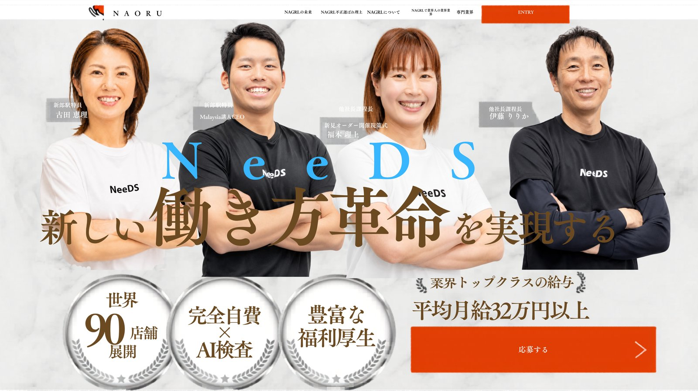
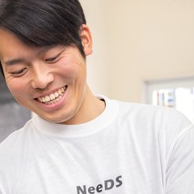

10年続けられるジムを、
選んでください。
神戸・六甲道 ／ パーソナルジムNeeDS
毎週の勉強会は、業務時間内。
スタッフ10名のうち3名が、産休・育休を経て今も現場に立っています。
WHO WE WANT
こんな方と働きたいと
思っています
- 人と話すことが好きで、接客そのものを楽しめる方
- チームで高め合うことに喜びを感じる方
- トレーナーという仕事を、10年20年続けたいと考えている方
- 学び続けることを、負担ではなく面白さだと感じる方
※ 未経験・無資格でも応募いただけます。資格（NSCA-CPT、AT、JATI等）をお持ちの方、実務経験のある方は優遇します。
- 人と話すより、黙々と作業する方が好きな方
- 自分の技術を磨くことにだけ関心があり、チームに興味がない方
- 決められたことをこなすだけで、学ぶ意欲がない方
- 仕事を「こなすもの」と捉えている方
少人数の会社なので、合う・合わないがはっきり出ます。
入ってから気づくより、先にお伝えしておきたいと思っています。
A DAY AT NeeDS
NeeDSで働く1日
| 8:45頃 | 出勤・開店準備（掃除・洗濯物干し） |
|---|---|
| 9:00〜 | 接客・トレーニング指導 |
| 昼 | 休憩 |
| 午後 | 接客・トレーニング指導 |
| 夕方 | LINEでのお客様フォロー・事務作業・販促活動など |
| 18:00 | 退勤 |
| 11:45頃 | 出勤・清掃 |
|---|---|
| 12:00〜 | 接客・トレーニング指導 |
| 夕方 | 休憩 |
| 夜 | 接客・トレーニング指導 |
| 21:00前後 | 締め作業・お客様フォロー → 退勤 |
1日の担当は、おおよそ5〜6件。
詰め込めばその日の売上は上がりますが、接客の質は落ち、トレーナーは消耗します。
私たちが目指しているのは、10年続けられる働き方です。
スタッフ10名の会社なので、開店準備も洗濯も販促も全員でやります。
そのぶん、指導の一件一件には時間をかけられる環境です。
ABOUT NeeDS
NeeDSという会社
お客様について
男女比はほぼ半々。男性は40〜60代、女性は40〜50代が中心です。
ダイエットや健康づくりを目的に、長く通ってくださる方が多いのが特徴です。
一人ひとりと腰を据えて向き合いたい方に向いた環境だと思います。
学べる環境の背景
代表の中務は、2010〜2012年に阪神タイガースと契約したヘッドトレーナーです。
さらにプロ野球トレーナー・メジャーリーグトレーナー・元プロ野球コーチがアドバイザーとして在籍し、勉強会で直接指導にあたっています。
トップレベルの指導者から学べる環境を、10年かけて作ってきました。
ADVISORS
OUR VALUES
NeeDSが大切にしていること
関わる人々の人生を、
より良く変えること
自分のことが好きになる場所
最初は、誰でも不安です。
でも、担当したお客様が変わっていく。「ありがとう」と言葉をもらう。
その積み重ねの中で、自分にできることが増えていることに気づきます。
お客様の成長が、そのまま自分の成長になる。
そう実感できたとき、はじめて「自分は、この仕事をしていていいんだ」と思える。
NeeDSのVision「自分のことが好きになる場所」は、
お客様に向けた言葉であると同時に、ここで働くスタッフに向けた言葉でもあります。
ワクワクする
ワクワクの中心にあるのは、自分の成長です。
去年できなかったことが、今年はできている。
担当できるお客様の幅が広がっている。
その実感がある限り、この仕事は面白い。
だからNeeDSは、学ぶ時間を業務時間の中に組み込んでいます。
プロ意識を持つ
プロ意識とは、失敗しないことではありません。
挑戦すること。失敗を恐れずに向かっていくこと。
そして、自分自身の健康と規律を保ったうえで、お客様に価値を届けること。
心身が整っていないトレーナーに、人を健康にすることはできないと考えています。
チームプレイする
誰かが休んだとき、新人が困っているとき、すぐに動く。
ただし、なんでも代わりにやってあげることではありません。
自分でできることは自分でやってもらう。そのぶん、自分は別の役割を引き受ける。
助け合いと抱え込みは違う。
役割を分担して、チーム全体が回る状態をつくること。それがNeeDSのチームプレイです。
WORK STYLE
安心して、長く働ける環境を
整えています。
ライフステージに合わせて、働き方を選べます
出産・育児期は9:00〜16:00の時短勤務に切り替えたスタッフが複数在籍しています。
復帰後もトレーナーとして現場に立ち続け、今もお客様を担当しています。
スタッフ10名のうち3名が、産休・育休を経て働いています。
早番・遅番の希望も、家庭の事情や生活リズムに応じて相談できます。
給与モデル
| 月給 | 賞与（年2回） | 想定年収 | |
|---|---|---|---|
| 未経験スタート | 230,000円〜 | 年間 20〜40万円 | 296万円〜 |
| 経験者・有資格者 | 270,000円〜 | 年間 20〜40万円 | 344万円〜 |
| 拠点マネジャー等 | 上記＋役職手当 15,000〜60,000円 | 年間 20〜40万円 | ー |
- 別途インセンティブあり（接客評価・社内KPIに連動）
- 昇給あり
※ 想定年収は賞与20万円で算出（社労士確認後に確定予定）
休日・勤務地
- 年間休日約107日（週休2日制＋年末年始）
- 有給休暇法定通り付与・取得可
- 勤務地神戸市灘区 六甲道エリア（3店舗）／基本的に転勤はありません
福利厚生
TRAINING & GROWTH
学びを、個人の努力に任せない。
| 内容 | 頻度 | 業務時間 |
|---|---|---|
| 勉強会 | 毎週1時間 | 業務時間内（給与発生） |
| 全体研修（トレーニング・接客・コミュニケーション） | 3ヶ月に1回 | 業務時間内 |
| 個別セッション・シミュレーション研修 | 希望に応じて随時 | 業務時間内 |
| 統括マネージャーとの1on1 | 定期実施 | 業務時間内 |
| 動画学習コンテンツ | いつでも視聴可 | 自由 |
| 任意の勉強会 | 月1回 | 参加自由 |
学びを「自己研鑽」の名前で個人に押しつけないことを、NeeDSは方針にしています。
毎週の勉強会も、個別研修も、1on1も、すべて業務時間内です。
そのうえで、もっと学びたい人のために動画コンテンツと月1回の自主勉強会を用意しています。
こちらは参加自由です。
資格取得支援
ピラティス系の資格取得を支援した実績があります。
トレーニング指導だけでなく、コンディショニングやピラティスへ専門領域を広げたい方を歓迎します。
NSCA・NESTA等の資格取得費用も会社が補助します。
STAFF VOICE
チームで高め合う、NeeDSの文化。
CEO MESSAGE
代表メッセージ

COMPARE
今の職場と、
比べてみてください。
同業を比べるのではなく、あなたが今抱えている悩みと、NeeDSでの現実を並べてみました。
| よくある悩み | NeeDSでは |
|---|---|
| 接客を詰め込まれて、一件一件が雑になる | 1日の担当はおおよそ5〜6件。詰め込む運営はしていません |
| 勉強は「自己研鑽」で、結局は自分の時間 | 毎週1時間の勉強会は業務時間内・給与発生 |
| 相談できる先輩がいない | 統括マネージャーとの1on1・個別研修あり |
| 結婚・出産したら続けられない | 10名中3名が産休・育休を経て在籍。時短勤務（9:00〜16:00）の前例あり |
| 資格を取りたいが、費用が自己負担 | NSCA・NESTA・ピラティス系等の取得費用を会社が補助 |
| 5年後の自分の姿が見えない | 拠点リーダー・マネジャーへの道あり（役職手当 15,000〜60,000円） |
JOB DETAILS
募集要項
※ 経験・スキルにより決定
※ 時短勤務 9:00〜16:00（応相談）
※ 基本的に転勤なし
FAQ
よくあるご質問
未経験ですが、応募できますか。
勉強会は業務時間内ですか。参加は強制ですか。
シフトの希望は出せますか。
産休・育休を取った人はいますか。
1日に何件くらい担当しますか。
転勤はありますか。
ピラティスの資格を取りたいのですが、支援はありますか。
APPLICATION
まずは、気軽に話しかけてください。
選考に不安がある方も、まずはLINEで相談だけでもOKです。